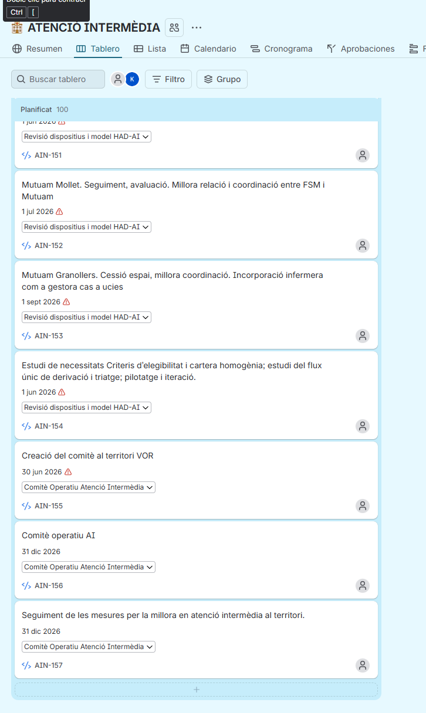
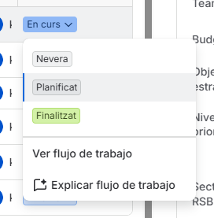
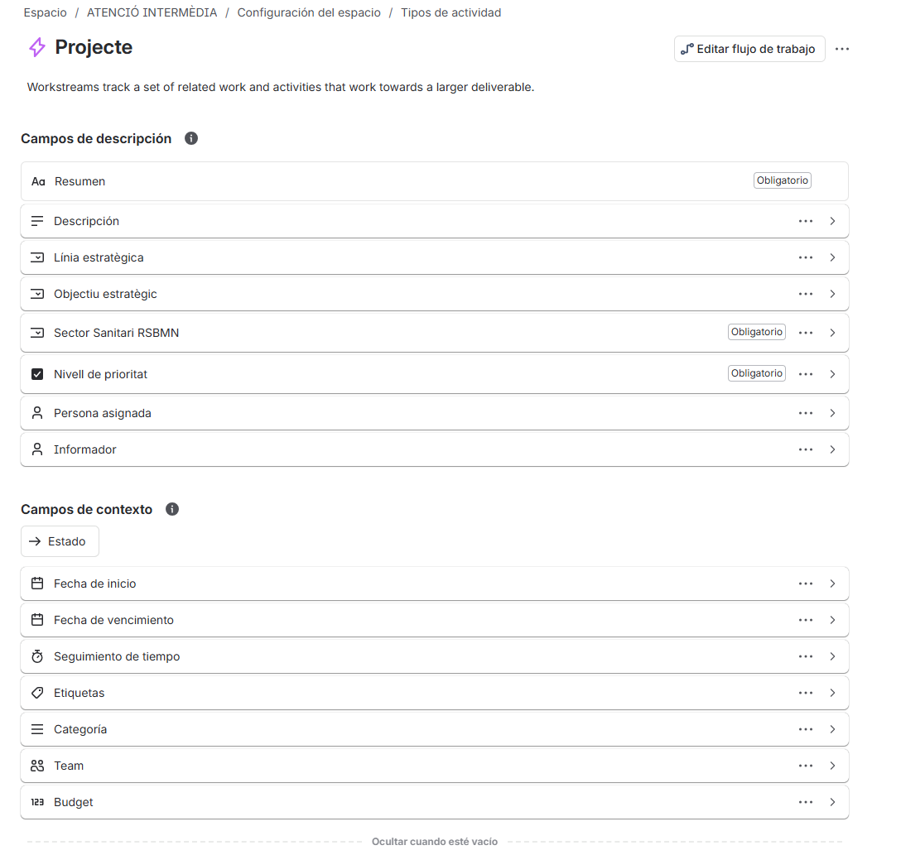

<title>Guia Jira RSBMN</title>
<style>
  /* Layout: sticky top tab-bar over a single scrolling column; dashboard section
     uses a responsive card grid with inline SVG stacked-status bars per space. */
  :root{
    --bg:#f7f8f6; --surface:#ffffff; --surface-2:#eef1ee;
    --ink:#10201c; --ink-2:#4a5a55; --muted:#7c8a85;
    --line:#dde3de; --accent:#0d6b5e; --accent-ink:#ffffff; --accent-soft:#e3f1ee;
    --good:#0ca30c; --warning:#c98500; --critical:#d03b3b; --neutral:#8b8f87;
    --chip-planificat:#c3c2b7; --chip-encurs:#eda100; --chip-finalitzat:#0ca30c; --chip-nevera:#5a7a9e;
    color-scheme: light;
  }
  @media (prefers-color-scheme: dark){
    :root:not([data-theme="light"]){
      --bg:#0f1512; --surface:#161d19; --surface-2:#1c2420;
      --ink:#f2f5f3; --ink-2:#c4cdc9; --muted:#8d9994;
      --line:#2a332e; --accent:#3ea593; --accent-ink:#06130f; --accent-soft:#15302b;
      --good:#2fbf4f; --warning:#e0a633; --critical:#e66767; --neutral:#8b9690;
      --chip-planificat:#555f58; --chip-encurs:#d6a13a; --chip-finalitzat:#2fbf4f; --chip-nevera:#5c85ad;
      color-scheme: dark;
    }
  }
  :root[data-theme="dark"]{
    --bg:#0f1512; --surface:#161d19; --surface-2:#1c2420;
    --ink:#f2f5f3; --ink-2:#c4cdc9; --muted:#8d9994;
    --line:#2a332e; --accent:#3ea593; --accent-ink:#06130f; --accent-soft:#15302b;
    --good:#2fbf4f; --warning:#e0a633; --critical:#e66767; --neutral:#8b9690;
    --chip-planificat:#555f58; --chip-encurs:#d6a13a; --chip-finalitzat:#2fbf4f; --chip-nevera:#5c85ad;
    color-scheme: dark;
  }

  *{box-sizing:border-box}
  body{
    background:var(--bg); color:var(--ink);
    font-family:-apple-system,BlinkMacSystemFont,"Segoe UI",Roboto,Arial,sans-serif;
    padding:0 18px; max-width:980px; margin:0 auto;
  }
  h1,h2,h3{text-wrap:balance; font-weight:700; letter-spacing:-0.01em}
  p{line-height:1.55; color:var(--ink-2); max-width:65ch}
  .eyebrow{
    text-transform:uppercase; letter-spacing:.09em; font-size:.72rem; font-weight:700;
    color:var(--accent);
  }

  header.hero{padding-block:28px 18px; border-bottom:1px solid var(--line)}
  header.hero h1{font-size:clamp(1.5rem,4vw,2.1rem); margin:6px 0 8px}
  header.hero p{margin:0}

  nav.tabs{
    position:sticky; top:env(safe-area-inset-top,0px); z-index:5;
    background:var(--bg); padding-block:10px; margin-block-end:6px;
    display:flex; gap:6px; flex-wrap:wrap; border-bottom:1px solid var(--line);
  }
  nav.tabs button{
    font:inherit; font-size:.86rem; font-weight:600; color:var(--ink-2);
    background:transparent; border:1px solid transparent; border-radius:999px;
    padding:7px 14px; cursor:pointer;
  }
  nav.tabs button:hover{background:var(--surface-2)}
  nav.tabs button[aria-selected="true"]{background:var(--accent); color:var(--accent-ink)}

  section.panel{padding-block:22px 44px}
  section.panel[hidden]{display:none!important}

  .card{
    background:var(--surface); border:1px solid var(--line); border-radius:14px;
    padding:18px 20px;
  }
  .stack{display:flex; flex-direction:column; gap:14px}
  .grid-2{display:grid; grid-template-columns:repeat(auto-fit,minmax(260px,1fr)); gap:14px}

  table{width:100%; border-collapse:collapse; font-size:.92rem}
  th,td{text-align:left; padding:9px 10px; border-bottom:1px solid var(--line); vertical-align:top}
  th{color:var(--muted); font-weight:600; font-size:.78rem; text-transform:uppercase; letter-spacing:.03em}
  td.muted{color:var(--muted)}
  .table-wrap{overflow-x:auto; margin-block:10px}

  .pill{
    display:inline-flex; align-items:center; gap:5px; font-size:.74rem; font-weight:700;
    padding:3px 9px; border-radius:999px; white-space:nowrap;
  }
  .pill.req{background:var(--accent-soft); color:var(--accent)}
  .pill.rec{background:var(--surface-2); color:var(--ink-2); border:1px solid var(--line)}
  .pill.opt{background:transparent; color:var(--muted); border:1px dashed var(--line)}

  .steps{counter-reset:step; list-style:none; margin:0; padding:0; display:flex; flex-direction:column; gap:12px}
  .steps li{counter-increment:step; display:flex; gap:12px; align-items:flex-start}
  .steps li::before{
    content:counter(step); flex:none; width:26px; height:26px; border-radius:50%;
    background:var(--accent); color:var(--accent-ink); font-size:.82rem; font-weight:700;
    display:flex; align-items:center; justify-content:center; margin-top:2px;
  }
  .steps li div p{margin:2px 0 0}
  .steps li strong{font-size:.95rem}

  .note{
    border-left:3px solid var(--accent); background:var(--accent-soft); border-radius:0 10px 10px 0;
    padding:12px 14px; font-size:.88rem; color:var(--ink-2);
  }
  .note strong{color:var(--ink)}

  .checklist{list-style:none; margin:0; padding:0; display:flex; flex-direction:column; gap:7px}
  .checklist li{display:flex; align-items:flex-start; gap:9px; font-size:.88rem; color:var(--ink-2)}
  .box{
    flex:none; width:16px; height:16px; margin-top:1px; border-radius:4px;
    border:1.5px solid var(--muted); background:var(--surface);
  }
  .checklist li.req .box{border-color:var(--accent); background:var(--accent-soft)}
  .checklist li strong{color:var(--ink)}
  .checklist-card h3{display:flex; align-items:center; gap:8px; margin:0 0 3px}
  .checklist-card .count{font-size:.74rem; font-weight:700; color:var(--muted)}

  /* --- schematic Jira screen mockups --- */
  .mock{
    border:1px solid var(--line); border-radius:10px; overflow:hidden; background:var(--surface);
  }
  .mock .bar{background:var(--surface-2); padding:7px 10px; font-size:.72rem; font-weight:700;
    color:var(--muted); display:flex; gap:8px; align-items:center; border-bottom:1px solid var(--line)}
  .mock .bar .dot{width:7px; height:7px; border-radius:50%; background:var(--line)}
  .mock .body{padding:12px}
  .mock-caption{font-size:.78rem; color:var(--muted); margin-top:6px}

  .screen-card h3{margin:0 0 2px; font-size:1.02rem}
  .screen-card .when{font-size:.84rem; color:var(--ink-2); margin-bottom:10px}

  /* Resum mockup: stat tiles + small bars */
  .mini-tiles{display:grid; grid-template-columns:repeat(3,1fr); gap:6px; margin-bottom:8px}
  .mini-tiles div{background:var(--surface-2); border-radius:6px; padding:6px; text-align:center}
  .mini-tiles b{display:block; font-size:1rem}
  .mini-tiles span{font-size:.62rem; color:var(--muted)}
  .mini-bars{display:flex; flex-direction:column; gap:4px}
  .mini-bars i{display:block; height:7px; border-radius:4px; background:var(--chip-encurs)}

  /* Cronograma mockup */
  .gantt-row{display:flex; align-items:center; gap:8px; margin-bottom:5px}
  .gantt-row .lbl{width:64px; font-size:.62rem; color:var(--muted); flex:none}
  .gantt-row .track{flex:1; height:9px; background:var(--surface-2); border-radius:5px; position:relative}
  .gantt-row .seg{position:absolute; top:0; height:100%; border-radius:5px; background:var(--accent)}

  /* Tauler mockup */
  .board{display:grid; grid-template-columns:repeat(4,1fr); gap:6px}
  .board .col{background:var(--surface-2); border-radius:6px; padding:5px}
  .board .col .h{font-size:.6rem; font-weight:700; color:var(--muted); margin-bottom:4px}
  .board .card2{background:var(--surface); border:1px solid var(--line); border-radius:5px; height:16px; margin-bottom:4px}

  /* Llista mockup */
  .list-row{display:flex; align-items:center; gap:6px; padding:4px 0; border-bottom:1px solid var(--line); font-size:.62rem}
  .list-row:last-child{border-bottom:none}
  .list-row .chk{width:9px; height:9px; border-radius:3px; border:1px solid var(--muted); flex:none}
  .list-row .t{flex:1; height:6px; background:var(--surface-2); border-radius:3px}
  .list-row .t.short{max-width:40%}

  /* Calendari mockup */
  .cal{display:grid; grid-template-columns:repeat(7,1fr); gap:3px}
  .cal div{aspect-ratio:1; background:var(--surface-2); border-radius:3px; position:relative}
  .cal div.ev::after{content:""; position:absolute; inset:2px auto auto 2px; width:60%; height:3px; background:var(--accent); border-radius:2px}

  /* dashboard */
  .space-card{display:flex; flex-direction:column; gap:10px}
  .space-card .head{display:flex; justify-content:space-between; align-items:baseline; gap:8px}
  .space-card .head h3{margin:0; font-size:1.05rem}
  .space-card .head .key{font-size:.74rem; color:var(--muted); font-weight:700}
  .stat-row{display:flex; gap:14px; flex-wrap:wrap}
  .stat{min-width:70px}
  .stat b{display:block; font-size:1.25rem; font-variant-numeric:tabular-nums}
  .stat span{font-size:.7rem; color:var(--muted); text-transform:uppercase; letter-spacing:.03em}
  .stat.crit b{color:var(--critical)}
  .legend{display:flex; gap:12px; flex-wrap:wrap; font-size:.76rem; color:var(--ink-2); margin-block:14px 4px}
  .legend span{display:inline-flex; align-items:center; gap:5px}
  .legend i{width:9px; height:9px; border-radius:2px; display:inline-block}
  .totals-bar{display:flex; height:14px; border-radius:7px; overflow:hidden; border:1px solid var(--line)}
  .totals-bar div{height:100%}

  footer{padding-block:26px 40px; color:var(--muted); font-size:.82rem; border-top:1px solid var(--line); margin-top:10px}
  /* figures with real screenshots */
  .fig{margin:14px 0 4px; border:1px solid var(--line); border-radius:12px; overflow:hidden; background:var(--surface)}
  .fig img{display:block; width:100%; height:auto}
  .fig figcaption{padding:8px 12px; font-size:.78rem; color:var(--ink-2); border-top:1px solid var(--line); display:flex; gap:8px; align-items:center; flex-wrap:wrap}
  .fig .real{font-size:.66rem; font-weight:700; letter-spacing:.04em; text-transform:uppercase; color:var(--accent-ink); background:var(--accent); padding:2px 7px; border-radius:999px}
  .fig.narrow{max-width:360px}
  .freq{display:inline-block; font-size:.68rem; font-weight:700; padding:2px 8px; border-radius:999px; border:1px solid var(--line); background:var(--surface-2); color:var(--ink-2); white-space:nowrap; vertical-align:middle}
  .freq.d{background:var(--accent-soft); color:var(--accent); border-color:transparent}
  .agenda td:first-child{white-space:nowrap; font-variant-numeric:tabular-nums; font-weight:700; color:var(--accent)}
  .agenda td:nth-child(2){color:var(--muted); font-size:.8rem; white-space:nowrap}
  .benefit{display:grid; grid-template-columns:repeat(auto-fit,minmax(220px,1fr)); gap:12px; margin-top:12px}
  .benefit .b{padding:14px; border-radius:12px; background:var(--surface-2)}
  .benefit .b strong{display:block; margin-bottom:4px}
  .benefit .b p{margin:0; font-size:.86rem; color:var(--ink-2)}
  kbd{display:inline-block;padding:1px 7px;border:1px solid var(--line);border-bottom-width:2px;border-radius:5px;background:var(--surface);font:600 .85em ui-monospace,monospace;}
</style>

<header class="hero">
  <p class="eyebrow">Pla de Treball Metro Nord 2026 · Jira</p>
  <h1>Guia dels espais de Jira de la RSBMN</h1>
  <p>Una referència per a qualsevol professional que treballi amb el Pla de Treball a Jira: què omplir, on mirar, quins correus rebràs, com és la formació d'arrencada, i com està anant cada línia ara mateix. Dades del quadre de comandament actualitzades el 9 d'octubre de 2026.</p>
</header>

<nav class="tabs" id="tabs">
  <button data-tab="acollida" aria-selected="true">Primers passos</button>
  <button data-tab="camps">Camps per tipus</button>
  <button data-tab="pantalles">Pantalles de l'espai</button>
  <button data-tab="filtres">Filtres per vista</button>
  <button data-tab="elements">Elements útils</button>
  <button data-tab="notificacions">Notificacions</button>
  <button data-tab="formacio">Formació 2h</button>
  <button data-tab="pendent">Configurar ara</button>
  <button data-tab="dashboard">Quadre de comandament</button>
</nav>

<!-- ============ ACOLLIDA ============ -->
<section class="panel" id="panel-acollida">
  <div class="stack">
    <div class="card">
      <h2 style="margin-top:0">Si no has entrat mai a Jira</h2>
      <p>Jira és on viu el Pla de Treball 2026: cada línia (Atenció Hospitalària, Atenció Primària, Salut Mental...) té el seu propi <strong>espai</strong>, i dins seu, cada acció del pla és un <strong>issue</strong> (una fitxa) amb un estat que es pot seguir en tot moment.</p>
      <ol class="steps">
        <li><div><strong>Entra amb el teu compte corporatiu</strong><p>A <code>rsbmn.atlassian.net</code>, amb el mateix usuari i contrasenya de @catsalut.cat. Si és el primer cop, et pot demanar validar el correu.</p></div></li>
        <li><div><strong>Troba el teu espai</strong><p>Al menú lateral esquerre, "Projectes" (o "Spaces" segons la vista) — hi apareixen tots els espais on tens accés: AH, APR, ASM, AIN, SI, CIF...</p></div></li>
        <li><div><strong>Mira què tens assignat</strong><p>A dalt a la dreta, la teva foto/avatar → "Les meves tasques" — o des de qualsevol espai, filtra per "Assignat a mi". Això et mostra només les fitxes que t'afecten, sense haver de buscar-les.</p></div></li>
        <li><div><strong>Obre una fitxa i actualitza-la</strong><p>Clica el títol d'una Acció. A dalt pots canviar l'estat (Planificat → En curs → Finalitzat); a baix pots afegir un comentari amb el progrés. Això és tot el que cal fer habitualment.</p></div></li>
        <li><div><strong>Per crear una fitxa nova: tecla <kbd>C</kbd></strong><p>És el mètode estàndard a tots els espais. Des de qualsevol vista (Tauler, Llista, Cronograma...) prem la tecla <kbd>C</kbd> o el botó "Crear" de la barra superior. S'obre el formulari complet, tries el tipus (Projecte o Acció), omples Resum, Sector, Nivell de prioritat i Persona assignada, i si és una Acció tries el Projecte pare. No facis servir el "+" del peu de la columna del Tauler: només demana el títol i deixa la fitxa incompleta.</p></div></li>
        <li><div><strong>Si et quedes encallat</strong><p>Comenta-ho directament a la fitxa (queda registrat i és visible per a tothom de l'equip) o parla-ho amb l'Elisa o en Kilian a la propera sessió de formació.</p></div></li>
      </ol>
    </div>

    <div class="grid-2">
      <div class="card">
        <h3 style="margin-top:0">Vocabulari mínim</h3>
        <div class="table-wrap">
          <table>
            <tr><th>Terme</th><th>Vol dir</th></tr>
            <tr><td><strong>Espai</strong></td><td class="muted">El projecte Jira d'una línia de treball (p. ex. AH = Atenció Hospitalària)</td></tr>
            <tr><td><strong>Issue</strong></td><td class="muted">Qualsevol fitxa: un Projecte, una Acció, una Tasca o una Subtasca</td></tr>
            <tr><td><strong>Projecte</strong> (tipus)</td><td class="muted">Un bloc de treball del pla (té accions a dins)</td></tr>
            <tr><td><strong>Acció</strong></td><td class="muted">Una tasca concreta del pla, penjada d'un Projecte</td></tr>
            <tr><td><strong>Estat</strong></td><td class="muted">Planificat · En curs · Finalitzat · Nevera (aturat)</td></tr>
          </table>
        </div>
      </div>
      <div class="card">
        <h3 style="margin-top:0">Els 6 espais actius</h3>
        <div class="table-wrap">
          <table>
            <tr><th>Clau</th><th>Línia</th></tr>
            <tr><td><strong>AH</strong></td><td class="muted">Atenció Hospitalària</td></tr>
            <tr><td><strong>APR</strong></td><td class="muted">Atenció Primària</td></tr>
            <tr><td><strong>ASM</strong></td><td class="muted">Atenció a la Salut Mental</td></tr>
            <tr><td><strong>AIN</strong></td><td class="muted">Atenció Intermèdia</td></tr>
            <tr><td><strong>SI</strong></td><td class="muted">Sistemes d'Informació</td></tr>
            <tr><td><strong>CIF</strong></td><td class="muted">Contractació i Facturació</td></tr>
          </table>
        </div>
      </div>
    </div>
  </div>
</section>

<!-- ============ CAMPS ============ -->
<section class="panel" id="panel-camps" hidden>
  <div class="stack">
    <p>Cada tipus de fitxa té un paper diferent. <strong>Projecte</strong> i <strong>Acció</strong> són els únics lligats al Pla de Treball — per això porten els camps estratègics. <strong>Tasca</strong> i <strong>Subtasca</strong> són genèrics, per a feina que no cal classificar dins el pla.</p>

    <div class="card" style="border-left:4px solid var(--accent)">
      <h3 style="margin-top:0">Mètode estàndard per crear qualsevol fitxa: tecla <kbd>C</kbd></h3>
      <ol class="steps">
        <li><div><strong>Entra a l'espai que toca</strong><p>AH, APR, ASM, AIN, SI o CIF. La vista en què estiguis és indiferent.</p></div></li>
        <li><div><strong>Prem <kbd>C</kbd> (o el botó "Crear" de dalt)</strong><p>S'obre el formulari complet de creació. Comprova que l'espai seleccionat a dalt del formulari és el correcte.</p></div></li>
        <li><div><strong>Tria el tipus</strong><p>Projecte si és un bloc de treball nou del pla; Acció si és feina dins d'un Projecte que ja existeix (hauràs de triar el Projecte pare).</p></div></li>
        <li><div><strong>Omple els 4 camps obligatoris</strong><p>Resum, Sector Sanitari RSBMN, Nivell de prioritat i Persona assignada. Si pots, afegeix també Línia, Objectiu i dates (checklist de sota).</p></div></li>
        <li><div><strong>Crea i localitza-la</strong><p>La fitxa nova queda al final de la columna Planificat. Per trobar-la, "Buscar tablero" amb el seu nom, o la vista Llista ordenada per "Creat" descendent.</p></div></li>
      </ol>
    </div>
    <div class="note">
      <strong>⚠️ Per què no el "+" del Tauler ni la creació ràpida del Cronograma.</strong> Aquests dos accessos només demanen el títol i no forcen cap altre camp, de manera que la fitxa queda incompleta i no surt bé al quadre de comandament. A més, el "+" del Tauler només existeix al peu de cada columna i Jira no permet moure'l a dalt (és un límit dels espais team-managed). Si la columna Planificat és massa llarga, al Tauler activa <strong>Agrupar → Persona assignada</strong> per tenir columnes curtes.
    </div>

    <div class="grid-2">
      <div class="card checklist-card">
        <h3>Projecte <span class="count">4 obligatoris + 4 recomanats</span></h3>
        <ul class="checklist">
          <li class="req"><span class="box"></span><div><strong>Resum</strong> — nom curt i clar del bloc de treball <span class="pill req">obligatori</span></div></li>
          <li class="req"><span class="box"></span><div><strong>Sector Sanitari RSBMN</strong> — territori(s) afectats <span class="pill req">obligatori</span></div></li>
          <li class="req"><span class="box"></span><div><strong>Nivell de prioritat</strong> — Nivell 1 a 4 (veure sota) <span class="pill req">obligatori</span></div></li>
          <li class="req"><span class="box"></span><div><strong>Persona assignada</strong> — qui respon del bloc <span class="pill req">obligatori</span></div></li>
          <li><span class="box"></span><div><strong>Línia estratègica</strong> — de quina de les 9 línies del pla forma part</div></li>
          <li><span class="box"></span><div><strong>Objectiu estratègic</strong> — a quin objectiu numerat contribueix</div></li>
          <li><span class="box"></span><div><strong>Data d'inici</strong> — quan arrenca el bloc</div></li>
          <li><span class="box"></span><div><strong>Data de venciment</strong> — quan ha d'estar tancat</div></li>
        </ul>
      </div>
      <div class="card checklist-card">
        <h3>Acció <span class="count">mateix estàndard</span></h3>
        <ul class="checklist">
          <li class="req"><span class="box"></span><div><strong>Resum</strong> — què cal fer, en una frase <span class="pill req">obligatori</span></div></li>
          <li class="req"><span class="box"></span><div><strong>Projecte pare</strong> — mai es crea solta <span class="pill req">obligatori</span></div></li>
          <li class="req"><span class="box"></span><div><strong>Sector Sanitari RSBMN</strong> — el d'aquesta acció concreta <span class="pill req">obligatori</span></div></li>
          <li class="req"><span class="box"></span><div><strong>Nivell de prioritat</strong> <span class="pill req">obligatori</span></div></li>
          <li class="req"><span class="box"></span><div><strong>Persona assignada</strong> — qui la tira endavant <span class="pill req">obligatori</span></div></li>
          <li><span class="box"></span><div><strong>Línia / Objectiu</strong> — els d'aquesta acció concreta</div></li>
          <li><span class="box"></span><div><strong>Data de venciment</strong> — quan ha d'estar feta</div></li>
          <li><span class="box"></span><div><strong>Estat</strong> — mantenir-lo al dia a mesura que avança</div></li>
        </ul>
      </div>
      <div class="card checklist-card">
        <h3>Tasca <span class="count">3 camps</span></h3>
        <ul class="checklist">
          <li class="req"><span class="box"></span><div><strong>Resum</strong> — què cal fer</div></li>
          <li><span class="box"></span><div><strong>Assignat</strong> — qui la fa</div></li>
          <li><span class="box"></span><div><strong>Data de venciment</strong> — si n'hi ha</div></li>
        </ul>
      </div>
      <div class="card checklist-card">
        <h3>Subtasca <span class="count">3 camps</span></h3>
        <ul class="checklist">
          <li class="req"><span class="box"></span><div><strong>Resum</strong> — el pas concret</div></li>
          <li class="req"><span class="box"></span><div><strong>Fitxa pare</strong> — la Tasca (o Acció) que desglossa</div></li>
          <li><span class="box"></span><div><strong>Assignat</strong> — qui la fa</div></li>
        </ul>
      </div>
    </div>

    <div class="card">
      <h3 style="margin-top:0">Projecte <span class="pill rec">bloc de treball</span></h3>
      <p style="margin-bottom:10px">Agrupa diverses Accions que persegueixen el mateix objectiu. El crea qui organitza la línia, no cal que ho faci cada professional.</p>
      <div class="table-wrap"><table>
        <tr><th>Camp</th><th>Què hi va</th><th></th></tr>
        <tr><td>Resum</td><td class="muted">Nom curt del bloc de treball</td><td><span class="pill req">obligatori</span></td></tr>
        <tr><td>Sector Sanitari RSBMN</td><td class="muted">Territori(s) afectats (es poden marcar diversos)</td><td><span class="pill req">obligatori</span></td></tr>
        <tr><td>Nivell de prioritat</td><td class="muted">Nivell 1 (Gerència · Serveis Matrius · Dept. Salut) · Nivell 2 (Directors de Sector) · Nivell 3 (At. Ciutadà · Farmàcia · Comunicació) · Nivell 4 (Millora interna · noves eines)</td><td><span class="pill req">obligatori</span></td></tr>
        <tr><td>Persona assignada</td><td class="muted">Responsable del bloc de treball</td><td><span class="pill req">obligatori</span></td></tr>
        <tr><td>Línia estratègica</td><td class="muted">A quina de les 9 línies del pla pertany (llista desplegable)</td><td><span class="pill rec">recomanat</span></td></tr>
        <tr><td>Objectiu estratègic</td><td class="muted">A quin objectiu numerat contribueix (p. ex. "L3OE10...")</td><td><span class="pill rec">recomanat</span></td></tr>
        <tr><td>Data d'inici / Data de venciment</td><td class="muted">Marc temporal del bloc sencer</td><td><span class="pill rec">recomanat</span></td></tr>
        <tr><td>Descripció</td><td class="muted">Context del bloc i de l'objectiu que persegueix</td><td><span class="pill opt">opcional</span></td></tr>
      </table></div>
    </div>

    <div class="card">
      <h3 style="margin-top:0">Acció <span class="pill rec">el que omple cada professional</span></h3>
      <p style="margin-bottom:10px">La unitat de treball real del pla. Sempre penja d'un Projecte — no s'ha de crear mai com a fitxa independent.</p>
      <div class="table-wrap"><table>
        <tr><th>Camp</th><th>Què hi va</th><th></th></tr>
        <tr><td>Resum</td><td class="muted">Què cal fer, en una frase</td><td><span class="pill req">obligatori</span></td></tr>
        <tr><td>Projecte pare</td><td class="muted">El bloc de treball al qual pertany</td><td><span class="pill req">obligatori</span></td></tr>
        <tr><td>Sector Sanitari RSBMN</td><td class="muted">Territori d'aquesta acció concreta</td><td><span class="pill req">obligatori</span></td></tr>
        <tr><td>Nivell de prioritat</td><td class="muted">Mateixa escala 1-4 que el Projecte</td><td><span class="pill req">obligatori</span></td></tr>
        <tr><td>Persona assignada</td><td class="muted">Qui la tira endavant</td><td><span class="pill req">obligatori</span></td></tr>
        <tr><td>Estat</td><td class="muted">Planificat / En curs / Finalitzat / Nevera — actualitza'l quan avancis</td><td><span class="pill rec">mantenir al dia</span></td></tr>
        <tr><td>Data de venciment</td><td class="muted">Quan ha d'estar fet</td><td><span class="pill rec">recomanat</span></td></tr>
        <tr><td>Línia / Objectiu</td><td class="muted">Els d'aquesta acció concreta</td><td><span class="pill rec">recomanat</span></td></tr>
        <tr><td>Comentaris (a la fitxa)</td><td class="muted">Progrés, bloquejos, decisions — el que t'agradaria que algú llegís si et substituís demà</td><td><span class="pill opt">opcional</span></td></tr>
      </table></div>
    </div>

    <div class="grid-2">
      <div class="card">
        <h3 style="margin-top:0">Tasca</h3>
        <p>Feina genèrica que no forma part del Pla de Treball 2026 (p. ex. una gestió puntual de l'espai). Només té els camps estàndard de Jira: Resum, Descripció, Assignat, Data de venciment, Etiquetes — <strong>sense</strong> Línia/Objectiu/Sector.</p>
      </div>
      <div class="card">
        <h3 style="margin-top:0">Subtasca</h3>
        <p>Un pas intern d'una Tasca (o, puntualment, d'una Acció) quan cal trencar-la en passos més petits. Mateixos camps bàsics que la Tasca; sempre necessita una fitxa pare.</p>
      </div>
    </div>

    <div class="note"><strong>Regla pràctica:</strong> si estàs registrant feina del Pla de Treball 2026, fes-ho sempre com a <strong>Acció</strong> dins el Projecte corresponent. Fes servir Tasca/Subtasca només per a feina puntual de l'espai que no forma part del pla.</div>
  </div>
</section>

<!-- ============ PANTALLES ============ -->
<section class="panel" id="panel-pantalles" hidden>
  <div class="note" style="margin-bottom:16px">
    <strong>Sobre les imatges:</strong> no he pogut connectar-me a Jira amb navegador des d'aquesta sessió, així que els esquemes següents són maquetes fidels a l'estructura real (no captures de pantalla). Si m'envieu 5-6 captures reals, les substitueixo per les autèntiques.
  </div>

  <div class="grid-2">
    <div class="card screen-card">
      <h3>Resum</h3>
      <div class="when">La pantalla d'entrada de l'espai: una foto ràpida de com va tot.</div>
      <div class="mock"><div class="bar"><span class="dot"></span>Resum de l'espai</div><div class="body">
        <div class="mini-tiles"><div><b>33</b><span>Projectes</span></div><div><b>86</b><span>Accions</span></div><div><b>22</b><span>Vençudes</span></div></div>
        <div class="mini-bars"><i style="width:70%"></i><i style="width:40%;background:var(--chip-finalitzat)"></i><i style="width:20%;background:var(--chip-nevera)"></i></div>
      </div></div>
      <p class="mock-caption">Útil per a: una visió general en 10 segons, sense entrar a cap fitxa.</p>
    </div>

    <div class="card screen-card">
      <h3>Cronograma</h3>
      <div class="when">Vista de línia temporal (Gantt) — mostra quan comença i acaba cada Projecte.</div>
      <div class="mock"><div class="bar"><span class="dot"></span>Cronograma</div><div class="body">
        <div class="gantt-row"><span class="lbl">Projecte A</span><div class="track"><div class="seg" style="left:5%;width:35%"></div></div></div>
        <div class="gantt-row"><span class="lbl">Projecte B</span><div class="track"><div class="seg" style="left:20%;width:50%"></div></div></div>
        <div class="gantt-row"><span class="lbl">Projecte C</span><div class="track"><div class="seg" style="left:45%;width:30%"></div></div></div>
      </div></div>
      <p class="mock-caption">Útil per a: planificar terminis i veure encavalcaments entre blocs de treball.</p>
    </div>

    <div class="card screen-card">
      <h3>Tauler</h3>
      <figure class="fig narrow">
        
        <figcaption><span class="real">Captura real</span> Espai AIN, columna Planificat. Cada targeta mostra títol, venciment (vermell si ha passat), Projecte pare i assignat.</figcaption>
      </figure>
      <div class="when">Vista en columnes per estat — arrossega una fitxa per canviar-ne l'estat.</div>
      <div class="mock"><div class="bar"><span class="dot"></span>Tauler</div><div class="body">
        <div class="board">
          <div class="col"><div class="h">PLANIFICAT</div><div class="card2"></div><div class="card2"></div><div class="card2"></div></div>
          <div class="col"><div class="h">EN CURS</div><div class="card2"></div><div class="card2"></div></div>
          <div class="col"><div class="h">FINALITZAT</div><div class="card2"></div></div>
          <div class="col"><div class="h">NEVERA</div><div class="card2"></div></div>
        </div>
      </div></div>
      <p class="mock-caption">Útil per a: reunions de seguiment — es veu d'una ullada què està aturat o avançant.</p>
    </div>

    <div class="card screen-card">
      <h3>Llista</h3>
      <div class="when">Totes les fitxes en una taula, amb filtres i ordenació per columna.</div>
      <div class="mock"><div class="bar"><span class="dot"></span>Llista</div><div class="body">
        <div class="list-row"><span class="chk"></span><span class="t"></span></div>
        <div class="list-row"><span class="chk"></span><span class="t short"></span></div>
        <div class="list-row"><span class="chk"></span><span class="t"></span></div>
        <div class="list-row"><span class="chk"></span><span class="t short"></span></div>
      </div></div>
      <p class="mock-caption">Útil per a: cercar una fitxa concreta o exportar/filtrar per sector, línia o responsable.</p>
    </div>

    <div class="card screen-card">
      <h3>Calendari</h3>
      <div class="when">Les dates de venciment distribuïdes pel mes.</div>
      <div class="mock"><div class="bar"><span class="dot"></span>Calendari</div><div class="body">
        <div class="cal">
          <div></div><div class="ev"></div><div></div><div></div><div class="ev"></div><div></div><div></div>
          <div></div><div></div><div class="ev"></div><div></div><div></div><div class="ev"></div><div></div>
        </div>
      </div></div>
      <p class="mock-caption">Útil per a: veure de cop quines entregues cauen el mateix mes.</p>
    </div>

    <div class="card screen-card">
      <h3>Fitxa d'una Acció</h3>
      <div class="when">On es registra el treball real.</div>
      <div class="mock"><div class="bar"><span class="dot"></span>AH-79 · Acció</div><div class="body">
        <div class="list-row" style="border:none"><span class="t short" style="height:9px"></span></div>
        <div class="list-row"><span class="t" style="max-width:30%"></span><span class="t" style="max-width:50%"></span></div>
        <div class="list-row"><span class="t" style="max-width:30%"></span><span class="t" style="max-width:35%"></span></div>
        <div class="list-row"><span class="t" style="max-width:30%"></span><span class="t" style="max-width:60%"></span></div>
      </div></div>
      <p class="mock-caption">Útil per a: canviar l'estat, afegir un comentari de progrés, revisar línia/objectiu/sector.</p>
    </div>
  </div>
</section>

<!-- ============ FILTRES ============ -->
<section class="panel" id="panel-filtres" hidden>
  <div class="stack">
    <div class="note">
      <strong>Honestedat primer:</strong> he comprovat les eines disponibles i no hi ha cap manera de crear filtres, taulers o vistes per defecte des d'aquí — els espais "gestionats per equip" (tots els nostres 6) no exposen aquesta configuració per API, només des de la interfície web. Tot el que ve a continuació és la <strong>proposta a validar</strong> que demanaves, amb el camí exacte de clics perquè la implementis tu (o qui tingui rol d'administrador de l'espai).
    </div>

    <div class="card">
      <h2 style="margin-top:0">Pensat des del treballador</h2>
      <p>Quan algú obre Jira al matí, la pregunta és sempre la mateixa: <strong>"Què tinc jo per fer, i per quan?"</strong> — no "què hi ha a tot l'espai". Per això el filtre més important, a totes les vistes, és <strong>Assignat a mi</strong>; la resta (Sector, Prioritat, Línia) serveixen per afinar quan algú té feina repartida en diversos territoris o vol mirar més enllà del que té assignat.</p>
    </div>

    <div class="card">
      <h3 style="margin-top:0">Proposta de filtres per vista</h3>
      <div class="table-wrap"><table>
        <tr><th>Vista</th><th>Filtres natius que hi ha</th><th>Recomanat activar-hi</th></tr>
        <tr>
          <td><strong>Llista</strong></td>
          <td class="muted">Cerca de text + avatars d'Assignat + botó "Més filtres" per qualsevol camp, també els nostres personalitzats</td>
          <td><span class="pill req">Assignat</span> <span class="pill req">Sector</span> <span class="pill rec">Prioritat</span> <span class="pill rec">Estat</span> <span class="pill rec">Línia</span></td>
        </tr>
        <tr>
          <td><strong>Tauler</strong></td>
          <td class="muted">Igual que Llista: avatars d'Assignat + "Més filtres"</td>
          <td><span class="pill req">Assignat</span> <span class="pill req">Sector</span> <span class="pill rec">Prioritat</span></td>
        </tr>
        <tr>
          <td><strong>Cronograma</strong></td>
          <td class="muted">Agrupar per Projecte/Assignat + filtre per Assignat i Equip</td>
          <td><span class="pill req">Assignat</span> <span class="pill rec">Línia</span></td>
        </tr>
        <tr>
          <td><strong>Calendari</strong></td>
          <td class="muted">Filtre per tipus de fitxa i Assignat</td>
          <td><span class="pill req">Assignat</span></td>
        </tr>
        <tr>
          <td><strong>Resum</strong></td>
          <td class="muted">No té filtres propis — són gràfics agregats, però es pot clicar una franja (p. ex. un estat) per saltar a la Llista ja filtrada</td>
          <td class="muted">— (punt d'entrada, no de filtratge)</td>
        </tr>
      </table></div>
      <p style="margin-top:10px"><strong>Sobre "Prioritat":</strong> no fem servir el camp natiu de prioritat de Jira (Highest/High/...), sinó el nostre <strong>Nivell de prioritat</strong> (Nivell 1 Gerència · Nivell 2 Directors de Sector · Nivell 3 Atenció Ciutadà/Farmàcia/Comunicació · Nivell 4 Millora interna) — actualment només s'omple a mà en alguns issues, caldrà anar-lo completant perquè el filtre sigui útil.</p>
    </div>

    <div class="card">
      <h3 style="margin-top:0">Com fer-ho servir (3 clics)</h3>
      <ol class="steps">
        <li><div><strong>Obre la vista Llista o Tauler de l'espai</strong><p>És on viuen els filtres complets.</p></div></li>
        <li><div><strong>Clica el teu avatar a la barra de filtres</strong><p>Això aplica "Assignat a mi" a l'instant — és el filtre més usat, per això Jira el posa com a drecera d'un sol clic.</p></div></li>
        <li><div><strong>Obre "Més filtres" per afinar</strong><p>Afegeix Sector si treballes en més d'un territori, o Nivell de prioritat si vols veure només el que és crític.</p></div></li>
      </ol>
    </div>

    <div class="card">
      <h3 style="margin-top:0">Vista per defecte "assignat a mi" per a cada professional</h3>
      <p style="margin-bottom:10px">Això es configura des de la interfície, no per API. Dues maneres, de més a menys recomanada:</p>
      <ol class="steps">
        <li><div><strong>Com a administrador de l'espai (ho veu tothom igual)</strong><p>A la vista Llista o Tauler, icona d'engranatge/control lliscant "Configuració de la vista" → tria Filtre = Assignat / Usuari actual → botó <strong>"Desar per a tothom"</strong>. A validar que aquesta opció hi surt tal qual al vostre Jira — si no hi és, cal la via 2.</p></div></li>
        <li><div><strong>Cada professional ho desa per si mateix (un sol cop, 15 segons)</strong><p>Entra a l'espai → Llista → clica el teu avatar ("Assignat a mi") → el navegador el recorda la propera vegada. Val la pena incloure-ho com a últim pas de la sessió de formació inicial.</p></div></li>
      </ol>
    </div>
  </div>
</section>

<!-- ============ ELEMENTS ÚTILS ============ -->
<section class="panel" id="panel-elements" hidden>
  <div class="stack">
    <div class="card">
      <h2 style="margin-top:0">Què fa servir de debò un professional</h2>
      <p>Jira té desenes de funcions. Per gestionar el Pla de Treball en calen poques i ben apreses. Aquest catàleg les ordena per freqüència d'ús real: el que es toca cada dia, el que es toca cada setmana i el que només fa servir qui coordina una línia. La formació de 2 hores cobreix els blocs "cada dia" i "cada setmana"; el bloc "coordinació" es fa en una sessió curta a part per als responsables de línia.</p>
      <div class="benefit">
        <div class="b"><strong>Una sola font de veritat</strong><p>S'acaben les versions de l'Excel per correu. L'estat d'una acció és el que diu la fitxa, i tothom veu el mateix.</p></div>
        <div class="b"><strong>Cadascú veu només el seu</strong><p>El filtre "Assignat a mi" converteix 600 fitxes en la teva llista de 10 o 15. La resta no et molesta.</p></div>
        <div class="b"><strong>Traçabilitat sense esforç</strong><p>Cada canvi d'estat i cada comentari queden datats i signats. L'historial de la fitxa substitueix els correus de "com està això?".</p></div>
        <div class="b"><strong>Recordatoris que arriben sols</strong><p>Jira avisa per correu quan una acció venç o fa un mes que no es mou. No cal que ningú persegueixi ningú.</p></div>
      </div>
    </div>

    <div class="card">
      <h3 style="margin-top:0">Cada dia <span class="freq d">5 elements</span></h3>
      <p class="muted" style="margin-top:0">Els que ha de dominar tothom en sortir de la formació. Si només s'aprèn això, el pilot ja funciona.</p>
      <div class="table-wrap"><table>
        <tr><th>#</th><th>Element</th><th>Per a què</th><th>On és</th></tr>
        <tr><td>1</td><td><strong>Assignat a mi</strong></td><td>Veure només les teves fitxes, a qualsevol vista. És la pantalla d'inici de cada professional.</td><td>Botó amb el teu avatar al costat de "Buscar" (a dalt de cada vista), o filtre "Persona asignada = jo" a Llista.</td></tr>
        <tr><td>2</td><td><strong>Canviar l'estat</strong></td><td>Dir on és la feina: Planificat → En curs → Finalitzat (o Nevera si s'atura). És l'única dada que el quadre de comandament necessita de tu.</td><td>Desplegable d'estat a la fitxa, o arrossegar la targeta entre columnes al Tauler.</td></tr>
        <tr><td>3</td><td><strong>Comentar</strong></td><td>Deixar constància d'un avenç, un bloqueig o una decisió. Amb <strong>@nom</strong> la persona rep un correu. Substitueix el correu intern.</td><td>Part inferior de la fitxa, caixa "Afegir un comentari".</td></tr>
        <tr><td>4</td><td><strong>Crear amb la tecla <kbd>C</kbd></strong></td><td>Alta d'una Acció o d'un Projecte nou amb tots els camps. Mètode estàndard a tots els espais.</td><td>Tecla <kbd>C</kbd> o botó "Crear" de la barra superior, des de qualsevol vista.</td></tr>
        <tr><td>5</td><td><strong>Cerca ràpida</strong></td><td>Trobar una fitxa pel títol o la clau (AIN-123) sense navegar.</td><td>Lupa de la barra superior (tota la instància) o "Buscar tablero" (només l'espai).</td></tr>
      </table></div>
      <figure class="fig narrow">
        
        <figcaption><span class="real">Captura real</span> El desplegable d'estat d'una fitxa. Un clic i la fitxa canvia de columna al Tauler i de color al quadre de comandament.</figcaption>
      </figure>
    </div>

    <div class="card">
      <h3 style="margin-top:0">Cada setmana <span class="freq">6 elements</span></h3>
      <p class="muted" style="margin-top:0">Per planificar-se la setmana i no deixar que res venci sense adonar-se'n.</p>
      <div class="table-wrap"><table>
        <tr><th>#</th><th>Element</th><th>Per a què</th><th>On és</th></tr>
        <tr><td>6</td><td><strong>Llista amb filtres</strong></td><td>Veure les fitxes com a taula: filtrar per Sector, Nivell de prioritat i Assignat, ordenar per venciment. És la vista de treball dels qui gestionen més d'un projecte.</td><td>Pestanya "Lista" de l'espai → botó "Filtro" i capçaleres de columna per ordenar.</td></tr>
        <tr><td>7</td><td><strong>Calendari</strong></td><td>Veure els venciments del mes d'un cop d'ull i detectar setmanes saturades.</td><td>Pestanya "Calendario". Les fitxes sense data de venciment no hi surten: motiu de més per omplir-la.</td></tr>
        <tr><td>8</td><td><strong>Cronograma</strong></td><td>Veure els Projectes com a barres de temps amb les seves Accions a dins. Útil per explicar la línia a algú en una reunió.</td><td>Pestanya "Cronograma". Arrossegar els extrems d'una barra canvia les dates.</td></tr>
        <tr><td>9</td><td><strong>Observar una fitxa</strong></td><td>Rebre correu de tot el que passi en una fitxa que no és teva però t'afecta (p. ex. una acció d'un altre sector de la qual depens).</td><td>Icona de l'ull a la part superior dreta de la fitxa.</td></tr>
        <tr><td>10</td><td><strong>Adjuntar o enllaçar</strong></td><td>Penjar l'acta, l'informe o l'enllaç a la carpeta compartida directament a la fitxa, perquè qui la llegeixi tingui el context sencer.</td><td>Botó "Adjuntar" o icona del clip a la fitxa; "Enllaç web" per a documents al núvol.</td></tr>
        <tr><td>11</td><td><strong>Agrupar el Tauler</strong></td><td>Veure el Tauler per persona (qui té què) o per prioritat (què és urgent). Columnes més curtes i cada grup amb el seu botó de crear.</td><td>Botó "Grupo" a dalt del Tauler → Persona asignada o Nivell de prioritat.</td></tr>
      </table></div>
    </div>

    <div class="card">
      <h3 style="margin-top:0">Coordinació de línia <span class="freq">5 elements</span></h3>
      <p class="muted" style="margin-top:0">Per a qui respon d'un espai sencer (Mireia, Maria Salut, Alba, Elisa, Kilian). No cal explicar-ho a tothom.</p>
      <div class="table-wrap"><table>
        <tr><th>#</th><th>Element</th><th>Per a què</th><th>On és</th></tr>
        <tr><td>12</td><td><strong>Resum de l'espai</strong></td><td>Gràfics automàtics: fitxes per estat, per assignat, per prioritat, vençudes. La foto de la línia per a una reunió de seguiment.</td><td>Pestanya "Resumen" de l'espai.</td></tr>
        <tr><td>13</td><td><strong>Filtres desats</strong></td><td>Guardar una cerca ("Accions del Maresme que vencen aquest trimestre") per no reconstruir-la cada setmana i poder subscriure-s'hi per correu.</td><td>Menú superior "Filtros" → "Ver todas las incidencias" → construir la cerca → "Guardar como".</td></tr>
        <tr><td>14</td><td><strong>Subscripció per correu a un filtre</strong></td><td>Rebre cada dilluns la llista d'un filtre desat al correu, sense entrar a Jira. És el "recordatori d'estat" més senzill que existeix.</td><td>Al filtre desat → "Detalles" → "Nueva suscripción" → dia i hora.</td></tr>
        <tr><td>15</td><td><strong>Exportar a Excel</strong></td><td>Treure la Llista filtrada a CSV/Excel per a un informe o per a qui encara no entra a Jira.</td><td>Vista Llista → menú "···" → "Exportar".</td></tr>
        <tr><td>16</td><td><strong>Quadre de comandament RSBMN</strong></td><td>Visió transversal dels 6 espais: totals, en curs, vençudes. És l'última pestanya d'aquesta guia i es regenera des de l'API.</td><td>Pestanya "Quadre de comandament" d'aquesta guia.</td></tr>
      </table></div>
    </div>

    <div class="note"><strong>El que NO fem servir al pilot</strong> (i no cal aprendre): sprints, punts d'història, fulls de temps, components, versions, taulers personalitzats. Si algú ho troba pel menú, que ho ignori. Es revisarà al final del pilot si alguna cosa d'això aporta valor.</div>
  </div>
</section>

<!-- ============ NOTIFICACIONS ============ -->
<section class="panel" id="panel-notificacions" hidden>
  <div class="stack">
    <div class="card">
      <h2 style="margin-top:0">Correus que recorden la situació de la feina</h2>
      <p>L'objectiu és que ningú hagi d'entrar a Jira "per si de cas". Jira ha d'avisar quan cal actuar, i només llavors. Això es configura en quatre nivells, de menys a més abast. Els nivells 1 i 4 els fa cada persona en 5 minuts (s'ensenyen a la formació); els nivells 2 i 3 els configura l'administrador de cada espai una sola vegada.</p>
      <div class="note" style="margin-top:12px"><strong>Principi:</strong> poc correu i rellevant. Si una persona rep més de 3 o 4 correus de Jira a la setmana sense que cap li demani una acció, la configuració està malament. Es revisa a la segona setmana del pilot.</div>
    </div>

    <div class="card">
      <h3 style="margin-top:0">Nivell 1 · El meu perfil <span class="freq d">cada usuari · 2 minuts</span></h3>
      <p>Avatar (a dalt a la dreta) → <strong>Configuración personal</strong> → <strong>Notificaciones por correo</strong>. Deixar-ho així:</p>
      <div class="table-wrap"><table>
        <tr><th>Opció</th><th>Estat</th><th>Per què</th></tr>
        <tr><td>Em assignen una fitxa</td><td><span class="pill req">activat</span></td><td>És feina nova per a tu. Sempre.</td></tr>
        <tr><td>Em mencionen (@nom)</td><td><span class="pill req">activat</span></td><td>Algú et demana alguna cosa explícitament.</td></tr>
        <tr><td>Comentaris a fitxes que observo o que tinc assignades</td><td><span class="pill req">activat</span></td><td>És la conversa de la teva feina.</td></tr>
        <tr><td>Els meus propis canvis</td><td><span class="pill opt">desactivat</span></td><td>No cal que Jira et digui el que acabes de fer.</td></tr>
        <tr><td>Resum per correu (digest) en lloc d'un correu per acció</td><td><span class="pill rec">activat si surt l'opció</span></td><td>Agrupa les notificacions del dia en un sol correu.</td></tr>
      </table></div>
    </div>

    <div class="card">
      <h3 style="margin-top:0">Nivell 2 · Esdeveniments de l'espai <span class="freq">administrador · 1 cop per espai</span></h3>
      <p><strong>Configuració de l'espai → Notificaciones</strong>. Defineix qui rep correu quan passa cada cosa dins l'espai. Proposta idèntica per als 6 espais:</p>
      <div class="table-wrap"><table>
        <tr><th>Quan passa…</th><th>Rep correu</th><th>No rep</th></tr>
        <tr><td>Es crea una fitxa</td><td>Responsable de la línia</td><td>Tothom més</td></tr>
        <tr><td>S'assigna una fitxa</td><td>La persona assignada</td><td>Responsable, informador</td></tr>
        <tr><td>Algú comenta</td><td>Assignat, informador, observadors</td><td>Responsable (si no observa)</td></tr>
        <tr><td>Canvia l'estat (transició)</td><td>Informador, responsable de la línia</td><td>Observadors</td></tr>
        <tr><td>Es finalitza o es posa a Nevera</td><td>Informador, responsable de la línia</td><td></td></tr>
        <tr><td>S'edita qualsevol camp (actualització)</td><td>Ningú</td><td>Tothom: és la font de soroll principal</td></tr>
      </table></div>
      <p class="muted" style="margin-top:10px">Nota operativa: mentre es facin les assignacions en bloc pendents (APR, ASM, AH, SI, CIF), l'esdeveniment "S'assigna una fitxa" es pot desactivar temporalment per no enviar centenars de correus, i tornar-lo a activar després.</p>
    </div>

    <div class="card">
      <h3 style="margin-top:0">Nivell 3 · Recordatoris automàtics de situació <span class="freq">administrador · regles d'automatització</span></h3>
      <p>Aquest és el nivell que respon a "recordar la situació": correus programats que surten sols segons l'estat i les dates de les fitxes. Es creen a <strong>Configuració de l'espai → Automatización → Crear regla</strong>, amb activador "Programado" (JQL) i acció "Enviar correo electrónico". Cinc regles, les mateixes a cada espai:</p>
      <div class="table-wrap"><table>
        <tr><th>Regla</th><th>Quan</th><th>Condició (JQL)</th><th>A qui</th><th>Missatge</th></tr>
        <tr><td><strong>R1 · Venç aquesta setmana</strong></td><td>Dilluns 08:00</td><td><code>due &lt;= 7d AND due &gt;= now() AND status NOT IN (Finalitzat, Nevera)</code></td><td>Assignat</td><td>"Tens N accions que vencen abans de diumenge" + llista amb enllaços.</td></tr>
        <tr><td><strong>R2 · Vençuda</strong></td><td>Dilluns 08:05</td><td><code>due &lt; now() AND status NOT IN (Finalitzat, Nevera)</code></td><td>Assignat + responsable de línia</td><td>"Accions amb data passada: actualitza l'estat, mou la data o posa-la a Nevera."</td></tr>
        <tr><td><strong>R3 · En curs sense moviment</strong></td><td>Dia 1 de cada mes</td><td><code>status = "En curs" AND updated &lt;= -30d</code></td><td>Assignat</td><td>"Fa més de 30 dies que no toques aquesta acció. Segueix en curs? Comenta-ho."</td></tr>
        <tr><td><strong>R4 · Hauria d'haver començat</strong></td><td>Dia 1 de cada mes</td><td><code>status = Planificat AND "Fecha de inicio" &lt;= now()</code></td><td>Assignat</td><td>"La data d'inici ja ha passat i segueix Planificat. Passa-la a En curs o replanifica." Equival a la marca REVISIÓ de l'Excel.</td></tr>
        <tr><td><strong>R5 · Sense responsable</strong></td><td>Dilluns 08:10</td><td><code>assignee IS EMPTY AND status != Nevera</code></td><td>Responsable de línia</td><td>"Fitxes de la teva línia sense persona assignada." Hauria de quedar a zero quan els camps obligatoris estiguin actius.</td></tr>
      </table></div>
      <div class="note" style="margin-top:12px"><strong>Dues precaucions.</strong> (1) Les regles d'automatització tenen un límit d'execucions mensuals segons el pla d'Atlassian contractat: per això són setmanals i mensuals, no diàries. Comprova el comptador a Configuració del lloc → Automatización → Uso. (2) Una regla creada des de l'espai només actua sobre aquell espai: cal repetir-la als 6, o crear-la com a regla global des de l'administració del lloc, que és el que recomano si tens permís.</div>
    </div>

    <div class="card">
      <h3 style="margin-top:0">Nivell 4 · El meu resum setmanal <span class="freq d">cada usuari · 3 minuts</span></h3>
      <p>Independent de les regles de l'administrador: cada persona es pot enviar a si mateixa, cada dilluns, la llista de les seves accions obertes. És la manera més robusta de "recordar la situació" perquè no depèn de ningú més.</p>
      <ol class="steps">
        <li><div><strong>Barra superior → Filtros → Ver todas las incidencias</strong><p>Enganxa aquesta cerca: <code>assignee = currentUser() AND status NOT IN (Finalitzat, Nevera) ORDER BY due ASC</code></p></div></li>
        <li><div><strong>Guardar como → "Les meves accions obertes"</strong><p>Queda al teu menú "Filtros" per sempre.</p></div></li>
        <li><div><strong>Detalles → Nueva suscripción</strong><p>Destinatari: tu. Freqüència: setmanal, dilluns, 08:00. Marca "No enviar si no hi ha resultats".</p></div></li>
      </ol>
      <p class="muted">El responsable de línia fa el mateix amb <code>project = XXX AND status NOT IN (Finalitzat, Nevera) AND due &lt; now()</code> per rebre cada setmana les vençudes de tot l'espai.</p>
    </div>

    <div class="card">
      <h3 style="margin-top:0">Qui rebrà què, en una setmana normal</h3>
      <div class="table-wrap"><table>
        <tr><th>Persona</th><th>Dilluns</th><th>Durant la setmana</th><th>Dia 1 de mes</th></tr>
        <tr><td><strong>Professional</strong> amb 12 accions</td><td>1 correu R1 (si en venç alguna) + 1 resum setmanal propi</td><td>Només si l'assignen, el mencionen o comenten una fitxa seva</td><td>R3 i R4 només si té accions encallades</td></tr>
        <tr><td><strong>Responsable de línia</strong></td><td>R2 (vençudes de la línia), R5 (sense assignar), resum propi</td><td>Altes i canvis d'estat de la línia</td><td>Res addicional</td></tr>
        <tr><td><strong>Oficina Tècnica</strong> (Elisa, Kilian)</td><td>Subscripció al quadre general (vençudes de tots els espais)</td><td>Només mencions</td><td>Revisió del comptador d'automatitzacions</td></tr>
      </table></div>
    </div>
  </div>
</section>

<!-- ============ FORMACIÓ ============ -->
<section class="panel" id="panel-formacio" hidden>
  <div class="stack">
    <div class="card">
      <h2 style="margin-top:0">Formació d'arrencada del pilot · 2 hores</h2>
      <p>Formadors: Elisa i Kilian. Format: sessió única, cada assistent amb el seu ordinador i sessió iniciada a Jira. Es treballa sobre les fitxes reals de cadascú, no sobre dades de prova: en sortir, la feina feta durant la sessió ja és feina real del pla. Grups de 8 a 12 persones com a màxim perquè els exercicis siguin acompanyats.</p>
      <div class="benefit">
        <div class="b"><strong>Objectiu 1</strong><p>Que tothom surti havent canviat un estat, escrit un comentari i creat una Acció amb la tecla C a les seves fitxes reals.</p></div>
        <div class="b"><strong>Objectiu 2</strong><p>Que tothom tingui configurat el perfil de notificacions i la subscripció setmanal pròpia.</p></div>
        <div class="b"><strong>Objectiu 3</strong><p>Que tothom sàpiga on és la guia i a qui preguntar.</p></div>
      </div>
    </div>

    <div class="card">
      <h3 style="margin-top:0">Prerequisits (Oficina Tècnica, la setmana abans)</h3>
      <ul class="checklist">
        <li><span class="box"></span><div>Usuari de Jira actiu i amb accés al seu espai per a cada assistent (prova d'accés enviada per correu 3 dies abans).</div></li>
        <li><span class="box"></span><div>Assignacions en bloc fetes a tots els espais: sense això, l'exercici 1 surt buit.</div></li>
        <li><span class="box"></span><div>Camps obligatoris (Sector, Prioritat, Persona assignada) actius a Projecte i Acció dels 6 espais, perquè l'exercici 2 ensenyi el formulari definitiu.</div></li>
        <li><span class="box"></span><div>Notificacions d'espai (nivell 2) i regles de recordatori (nivell 3) configurades, per poder-les mostrar.</div></li>
        <li><span class="box"></span><div>Estat Nevera en vermell i filtres per defecte a les vistes, per ensenyar la configuració final.</div></li>
        <li><span class="box"></span><div>Enllaç a aquesta guia enviat amb la convocatòria. Projector o pantalla compartida amb l'espai AIN obert com a espai de demostració.</div></li>
      </ul>
    </div>

    <div class="card">
      <h3 style="margin-top:0">Agenda</h3>
      <div class="table-wrap"><table class="agenda">
        <tr><th>Hora</th><th>Durada</th><th>Bloc</th><th>Com es fa</th><th>Resultat observable</th></tr>
        <tr><td>0:00</td><td>10'</td><td><strong>Per què canviem l'Excel per Jira</strong></td><td>Kilian. Tres diapositives: el problema (versions, "qui ho porta?", estat desconegut), la solució (una fitxa per acció, un estat, un responsable) i les regles del pilot (fins al 31/12; des de l'1/1/2027 és l'única via de petició d'informació).</td><td>Tothom entén que no és una eina més: és la substituta de l'Excel.</td></tr>
        <tr><td>0:10</td><td>15'</td><td><strong>Tour guiat en viu</strong></td><td>Elisa, sobre l'espai AIN. Entrar, trobar l'espai, les 5 vistes en 2 minuts cadascuna, vocabulari Projecte / Acció / Estat, i on és el botó "Assignat a mi". Sense que ningú toqui res encara.</td><td>Els assistents reconeixen la pantalla quan la vegin sols.</td></tr>
        <tr><td>0:25</td><td>20'</td><td><strong>Exercici 1 · La meva feina</strong></td><td>Cadascú al seu espai: activar "Assignat a mi", obrir una Acció pròpia, passar-la a "En curs" (si ho és de debò), escriure un comentari amb l'estat real i fer @menció al responsable de la línia. Els formadors passegen.</td><td>Cada assistent té 1 canvi d'estat i 1 comentari a l'historial.</td></tr>
        <tr><td>0:45</td><td>20'</td><td><strong>Exercici 2 · Crear bé</strong></td><td>Tecla <kbd>C</kbd>: crear una Acció real que falti dins d'un Projecte propi, omplint els 4 obligatoris. Qui no en tingui cap de pendent, crea una amb el prefix "[PROVA]" i la posa a Nevera (Elisa les esborra l'endemà). Després trobar-la amb "Buscar tablero".</td><td>Cada assistent ha creat 1 fitxa completa i la sap localitzar.</td></tr>
        <tr><td>1:05</td><td>10'</td><td><strong>Pausa</strong></td><td></td><td></td></tr>
        <tr><td>1:15</td><td>20'</td><td><strong>Vistes per planificar-se</strong></td><td>Elisa. Llista amb filtres (Sector + Prioritat + ordenar per venciment), Calendari, Cronograma, Agrupar el Tauler per persona. Exercici 3 curt: "troba les accions del teu sector que vencen abans de final d'any".</td><td>Cada assistent sap respondre "què em venç aquest mes?" en menys d'un minut.</td></tr>
        <tr><td>1:35</td><td>15'</td><td><strong>Notificacions</strong></td><td>Kilian. Cadascú configura el nivell 1 (perfil) i el nivell 4 (subscripció setmanal) en viu, pas a pas. Es mostra un correu de recordatori R1 real i s'explica què fer quan arriba.</td><td>Tothom té el perfil i la subscripció configurats. Saben interpretar els correus.</td></tr>
        <tr><td>1:50</td><td>10'</td><td><strong>Tancament</strong></td><td>Regles del pilot (actualitzar estat quan canviï, comentar en lloc d'enviar correu, mai crear des del "+" del Tauler), canal de dubtes, data de la sessió de seguiment, enquesta de 3 preguntes.</td><td>Enquesta contestada abans de sortir.</td></tr>
      </table></div>
    </div>

    <div class="grid-2">
      <div class="card">
        <h3 style="margin-top:0">Materials</h3>
        <ul class="checklist">
          <li><span class="box"></span><div>Aquesta guia (enllaç a la convocatòria i al tancament).</div></li>
          <li><span class="box"></span><div>Les 3 diapositives d'obertura (presentació del repositori, actualitzada amb el calendari del pilot).</div></li>
          <li><span class="box"></span><div>Full "xuleta" d'una cara per imprimir: els 5 elements de cada dia, la tecla C, els 4 camps obligatoris, els estats i què vol dir cadascun.</div></li>
          <li><span class="box"></span><div>Enquesta de sortida: "Sabries fer-ho sol demà? (1-5)", "Què t'ha quedat menys clar?", "Quin correu de Jira et semblaria útil rebre?".</div></li>
        </ul>
      </div>
      <div class="card">
        <h3 style="margin-top:0">Com sabrem que ha funcionat</h3>
        <ul class="checklist">
          <li><span class="box"></span><div><strong>Mateix dia:</strong> cada assistent té a l'historial 1 transició, 1 comentari i 1 fitxa creada (es comprova per JQL en acabar).</div></li>
          <li><span class="box"></span><div><strong>Setmana 2:</strong> sessió de 30 minuts de dubtes. Indicador: % d'assistents que han tornat a entrar a Jira.</div></li>
          <li><span class="box"></span><div><strong>Mensual durant el pilot:</strong> % de fitxes "En curs" actualitzades en els últims 30 dies, i nombre de fitxes vençudes sense comentari. Surten del quadre de comandament.</div></li>
          <li><span class="box"></span><div><strong>Final del pilot (desembre):</strong> enquesta de satisfacció i decisió sobre els 7 espais que falten per crear.</div></li>
        </ul>
      </div>
    </div>

    <div class="note"><strong>Sessió complementària per a responsables de línia (45 minuts, un altre dia):</strong> Resum de l'espai, filtres desats i subscripcions de la línia, exportació a Excel, lectura del quadre de comandament, i què fer amb els correus R2 i R5. Assistents: Mireia Rodríguez, Maria Salut Martínez, Alba Luna, Elisa Poses, Kilian Lansaque.</div>
  </div>
</section>

<!-- ============ PENDENT (configuració manual) ============ -->
<section class="panel" id="panel-pendent" hidden>
  <div class="stack">
    <div class="note">
      <strong>Per què és manual:</strong> he revisat totes les operacions disponibles del connector de Jira (més de 300) i cap permet canviar el color d'un estat ni la configuració de vistes/filtres d'un espai. És configuració de projecte, exclusiva de la interfície web, i només la pot fer algú amb rol d'administrador de l'espai. Les dues coses s'han de repetir <strong>a cadascun dels 6 espais</strong> — no hi ha un lloc únic que ho apliqui a tots alhora.
    </div>

    <div class="card">
      <h3 style="margin-top:0">1 · Posar "Nevera" en vermell</h3>
      <p style="margin-bottom:10px">Ara mateix "Nevera" i "Planificat" comparteixen la mateixa categoria d'estat ("Per fer"), per això es veuen amb el mateix gris. Cal donar-li un color propi.</p>
      <ol class="steps">
        <li><div><strong>Entra a l'espai</strong><p>Configuració de l'espai (engranatge, a baix del menú esquerre) → <strong>Fluxos de treball</strong> (Workflow) — o des del desplegable d'estat d'una fitxa, "Explicar flux de treball" com el de la teva captura.</p></div></li>
        <li><div><strong>Clica l'estat "Nevera"</strong><p>S'obre un selector de color — tria un vermell/vermellós de la paleta disponible per a aquesta categoria.</p></div></li>
        <li><div><strong>Desa els canvis</strong><p>S'aplica a l'instant a totes les fitxes (Projecte, Acció, Tasca, Subtasca) d'aquest espai — no cal tocar-les una per una.</p></div></li>
      </ol>
      <p style="margin-top:10px" class="mock-caption">Si el selector de color no ofereix cap vermell dins la categoria "Per fer", és un límit de Jira (els colors disponibles depenen de la categoria); l'alternativa seria crear "Nevera" com a estat de categoria pròpia, cosa que sí que canvia com es comporta a Tauler/Cronograma — val la pena decidir-ho junts abans de fer-ho.</p>
    </div>

    <div class="card">
      <h3 style="margin-top:0">2 · Preconfigurar els filtres per defecte (resum de la pestanya anterior)</h3>
      <p style="margin-bottom:10px">A cada espai, a les vistes Llista i Tauler: icona de "Configuració de la vista" → afegeix Assignat, Sector i Nivell de prioritat com a columnes/filtres visibles → botó "Desar per a tothom" (si hi surt) perquè quedi per defecte per a qualsevol que obri l'espai.</p>
    </div>

    <div class="card">
      <h3 style="margin-top:0">3 · Camps obligatoris a Projecte i Acció</h3>
      <figure class="fig">
        
        <figcaption><span class="real">Captura real</span> AIN · Tipus d'activitat · Projecte. Això és el model a replicar als altres 5 espais, afegint-hi "Persona asignada" com a obligatori.</figcaption>
      </figure>
      <p style="margin-bottom:10px">L'estàndard és el que ja té AIN per al tipus Projecte, més la persona assignada. Verificat per API el 9/10/2026: només AIN·Projecte el compleix (i encara li falta "Persona assignada"); els altres 5 espais i tots els tipus Acció només tenen "Resum" com a obligatori.</p>
      <ol class="steps">
        <li><div><strong>Abans de res: les assignacions</strong><p>AIN ja està fet per API (98 fitxes assignades a Kilian el 9/10/2026, sense cap correu perquè l'autor i l'assignat són la mateixa persona). Per a APR, ASM, AH, SI i CIF (290 fitxes sense assignar) hi ha dues vies: (a) Bulk Change manual amb "Enviar correu" desmarcat, o (b) desactivar temporalment la notificació "Issue assigned" a <em>Configuració de l'espai → Notificacions</em> de cada espai, avisar-me, i ho faig jo per API en minuts; després es torna a activar.</p></div></li>
        <li><div><strong>Configuració de l'espai → Tipus d'activitat → Projecte</strong><p>A cada camp: botó "···" a la dreta → marca <strong>Obligatori</strong>. Fes-ho per a: Sector Sanitari RSBMN, Nivell de prioritat, Persona assignada.</p></div></li>
        <li><div><strong>Repeteix al tipus Acció</strong><p>Mateix recorregut, mateixos 3 camps. Si "Persona assignada" no surt a la llista de camps d'Acció, afegeix-la primer amb "Afegir camp" i després marca-la obligatòria.</p></div></li>
        <li><div><strong>Quan acabis, m'ho dius</strong><p>Torno a passar l'auditoria per API als 6 espais i et confirmo que tots han quedat idèntics — això sí que ho puc verificar des d'aquí.</p></div></li>
      </ol>
    </div>

    <div class="card">
      <h3 style="margin-top:0">Checklist per repetir als 6 espais</h3>
      <div class="table-wrap"><table>
        <tr><th>Espai</th><th>Nevera en vermell</th><th>Filtres per defecte</th><th>Camps obligatoris (Projecte)</th><th>Camps obligatoris (Acció)</th></tr>
        <tr><td><strong>AH</strong> · Atenció Hospitalària</td><td><span class="box" style="display:inline-block"></span></td><td><span class="box" style="display:inline-block"></span></td><td><span class="box" style="display:inline-block"></span></td><td><span class="box" style="display:inline-block"></span></td></tr>
        <tr><td><strong>APR</strong> · Atenció Primària</td><td><span class="box" style="display:inline-block"></span></td><td><span class="box" style="display:inline-block"></span></td><td><span class="box" style="display:inline-block"></span></td><td><span class="box" style="display:inline-block"></span></td></tr>
        <tr><td><strong>ASM</strong> · Salut Mental</td><td><span class="box" style="display:inline-block"></span></td><td><span class="box" style="display:inline-block"></span></td><td><span class="box" style="display:inline-block"></span></td><td><span class="box" style="display:inline-block"></span></td></tr>
        <tr><td><strong>AIN</strong> · Atenció Intermèdia <span class="pill rec">assignacions fetes per API</span></td><td><span class="box" style="display:inline-block"></span></td><td><span class="box" style="display:inline-block"></span></td><td><span class="pill rec">Sector + Prioritat fets · falta Assignada</span></td><td><span class="box" style="display:inline-block"></span></td></tr>
        <tr><td><strong>SI</strong> · Sistemes d'Informació</td><td><span class="box" style="display:inline-block"></span></td><td><span class="box" style="display:inline-block"></span></td><td><span class="box" style="display:inline-block"></span></td><td><span class="box" style="display:inline-block"></span></td></tr>
        <tr><td><strong>CIF</strong> · Contractació i Facturació</td><td><span class="box" style="display:inline-block"></span></td><td><span class="box" style="display:inline-block"></span></td><td><span class="box" style="display:inline-block"></span></td><td><span class="box" style="display:inline-block"></span></td></tr>
      </table></div>
      <p class="mock-caption">Caselles merament visuals (aquesta pàgina no desa l'estat) — imprimeix-la o marca-la de paraula a la propera sessió de formació.</p>
    </div>
  </div>
</section>

<!-- ============ DASHBOARD ============ -->
<section class="panel" id="panel-dashboard" hidden>
  <p>Dades reals extretes de Jira el 9 d'octubre de 2026 — 623 fitxes en total als 6 espais actius.</p>

  <div class="legend">
    <span><i style="background:var(--chip-planificat)"></i>Planificat</span>
    <span><i style="background:var(--chip-encurs)"></i>En curs</span>
    <span><i style="background:var(--chip-finalitzat)"></i>Finalitzat</span>
    <span><i style="background:var(--chip-nevera)"></i>Nevera</span>
  </div>

  <div id="dash-grid" class="grid-2"></div>

  <div class="card" style="margin-top:16px">
    <h3 style="margin-top:0">Conjunt dels 6 espais</h3>
    <div class="stat-row" id="dash-totals"></div>
  </div>
</section>

<footer>Guia generada a partir de les dades reals dels espais de Jira de la RSBMN. Secció "Pantalles de l'espai": esquemes il·lustratius, no captures de pantalla.</footer>

<script>
(function(){
  var data = {
    "projects": {
      "AH":  {"name":"Atenció Hospitalària",      "total":121,"by_status":{"Planificat":119,"En curs":0,"Finalitzat":0,"Nevera":1},"overdue_open":22,"due_soon_30d":1},
      "APR": {"name":"Atenció Primària",          "total":159,"by_status":{"Planificat":159,"En curs":0,"Finalitzat":0,"Nevera":0},"overdue_open":27,"due_soon_30d":0},
      "ASM": {"name":"Atenció a la Salut Mental",  "total":102,"by_status":{"Planificat":91,"En curs":6,"Finalitzat":2,"Nevera":3},"overdue_open":27,"due_soon_30d":1},
      "CIF": {"name":"Contractació i Facturació",  "total":6,  "by_status":{"Planificat":6,"En curs":0,"Finalitzat":0,"Nevera":0},"overdue_open":0,"due_soon_30d":0},
      "AIN": {"name":"Atenció Intermèdia",         "total":157,"by_status":{"Planificat":99,"En curs":48,"Finalitzat":8,"Nevera":0},"overdue_open":38,"due_soon_30d":20},
      "SI":  {"name":"Sistemes d'Informació",      "total":78, "by_status":{"Planificat":34,"En curs":0,"Finalitzat":0,"Nevera":1},"overdue_open":15,"due_soon_30d":3}
    },
    "totals": {"total":623,"by_status":{"Planificat":508,"En curs":54,"Finalitzat":10,"Nevera":5},"overdue_open":129,"due_soon_30d":25}
  };
  var order = ["Planificat","En curs","Finalitzat","Nevera"];
  var colorVar = {"Planificat":"--chip-planificat","En curs":"--chip-encurs","Finalitzat":"--chip-finalitzat","Nevera":"--chip-nevera"};

  function bar(byStatus){
    var sum = order.reduce(function(a,k){return a+(byStatus[k]||0)},0) || 1;
    return '<div class="totals-bar">' + order.map(function(k){
      var w = (byStatus[k]||0)/sum*100;
      if(w<=0) return '';
      return '<div style="width:'+w.toFixed(2)+'%;background:var('+colorVar[k]+')" title="'+k+': '+byStatus[k]+'"></div>';
    }).join('') + '</div>';
  }

  var grid = document.getElementById('dash-grid');
  Object.keys(data.projects).forEach(function(key){
    var p = data.projects[key];
    var el = document.createElement('div');
    el.className = 'card space-card';
    el.innerHTML =
      '<div class="head"><h3>'+p.name+'</h3><span class="key">'+key+'</span></div>' +
      bar(p.by_status) +
      '<div class="stat-row">' +
        '<div class="stat"><b>'+p.total+'</b><span>Fitxes</span></div>' +
        '<div class="stat"><b>'+(p.by_status['En curs']||0)+'</b><span>En curs</span></div>' +
        '<div class="stat"><b>'+(p.by_status['Finalitzat']||0)+'</b><span>Finalitzat</span></div>' +
        '<div class="stat crit"><b>'+p.overdue_open+'</b><span>Vençudes</span></div>' +
        '<div class="stat"><b>'+p.due_soon_30d+'</b><span>Vencen &lt;30d</span></div>' +
      '</div>';
    grid.appendChild(el);
  });

  document.getElementById('dash-totals').innerHTML =
    order.map(function(k){return '<div class="stat"><b>'+(data.totals.by_status[k]||0)+'</b><span>'+k+'</span></div>'}).join('') +
    '<div class="stat crit"><b>'+data.totals.overdue_open+'</b><span>Vençudes obertes</span></div>' +
    '<div class="stat"><b>'+data.totals.total+'</b><span>Total fitxes</span></div>';

  var tabs = document.querySelectorAll('#tabs button');
  tabs.forEach(function(btn){
    btn.addEventListener('click', function(){
      tabs.forEach(function(b){ b.setAttribute('aria-selected','false') });
      btn.setAttribute('aria-selected','true');
      document.querySelectorAll('section.panel').forEach(function(p){ p.hidden = true });
      document.getElementById('panel-'+btn.dataset.tab).hidden = false;
      try{ sessionStorage.setItem('jira-guia-tab', btn.dataset.tab) }catch(e){}
    });
  });
  try{
    var saved = sessionStorage.getItem('jira-guia-tab');
    if(saved){ var b = document.querySelector('#tabs button[data-tab="'+saved+'"]'); if(b) b.click(); }
  }catch(e){}
})();
</script>
